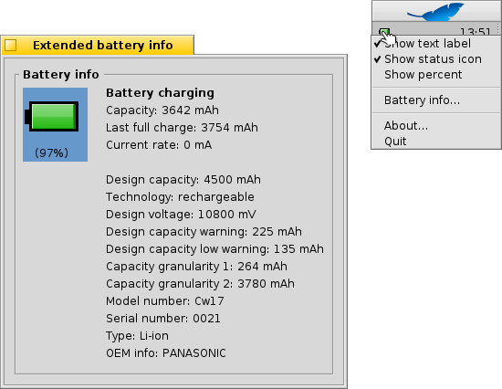

Português
Português Français
Français Deutsch
Deutsch Italiano
Italiano Русский
Русский Español
Español Svenska
Svenska 日本語
日本語 Українська
Українська 中文 ［中文］
中文 ［中文］ Suomi
Suomi Slovenčina
Slovenčina Magyar
Magyar Português (Brazil)
Português (Brazil) English
EnglishThe translation of this page isn't yet complete. Until it is, unfinished parts use the English original.
 PowerStatus
PowerStatus
| Deskbar: | ||
| Location: | /boot/system/apps/PowerStatus | |
| Settings: | ~/config/settings/PowerStatus settings |
PowerStatus shows information about the battery level, so it's only useful on mobile computers. If not yet running, launching the applet will ask if it should open in window mode or live in the Deskbar. In window mode you're able to resize the icon by resizing the window and use the Replicant handle to drag it to the Desktop.
Wherever installed, it's operated via a right-click context menu.
Note: PowerStatus requires a working ACPI support.
The context menu offers these options:
| Shows battery level in percent or remaining time. | ||
| Shows icon of the applet. | ||
| Switch between showing battery level in percent or remaining time ( has to be active). | ||
| Shows the extended battery info window. | ||
| Shows the About window. | ||
| Quits the PowerStatus applet. |
When is active, the battery level is shown in brackets while charging.